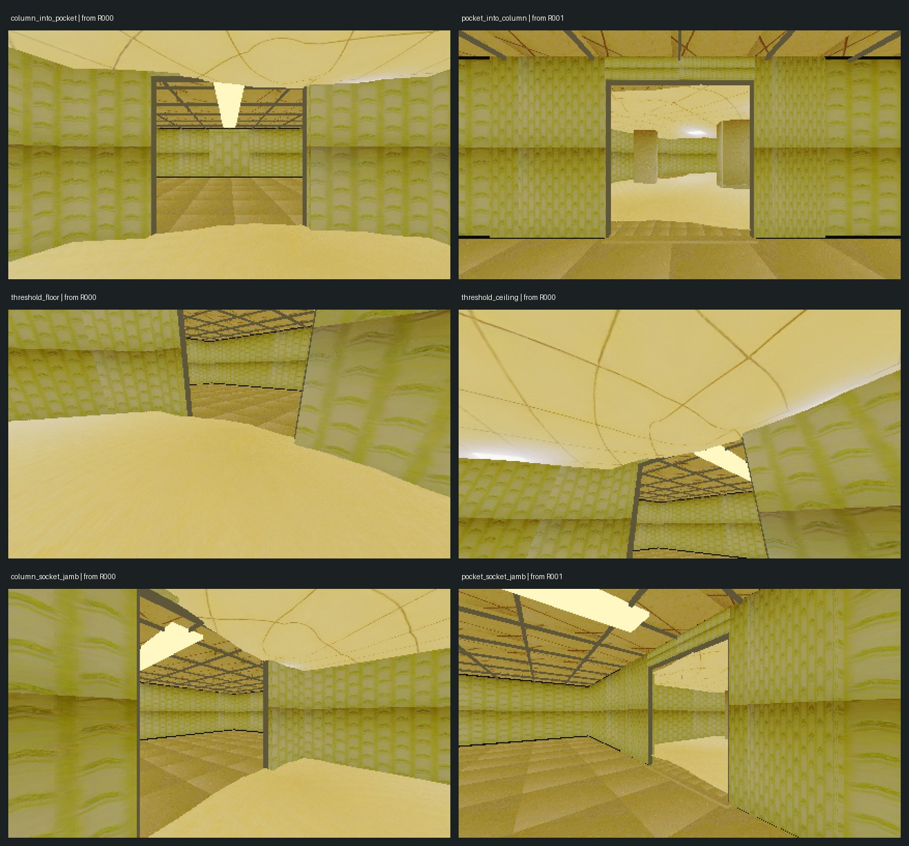
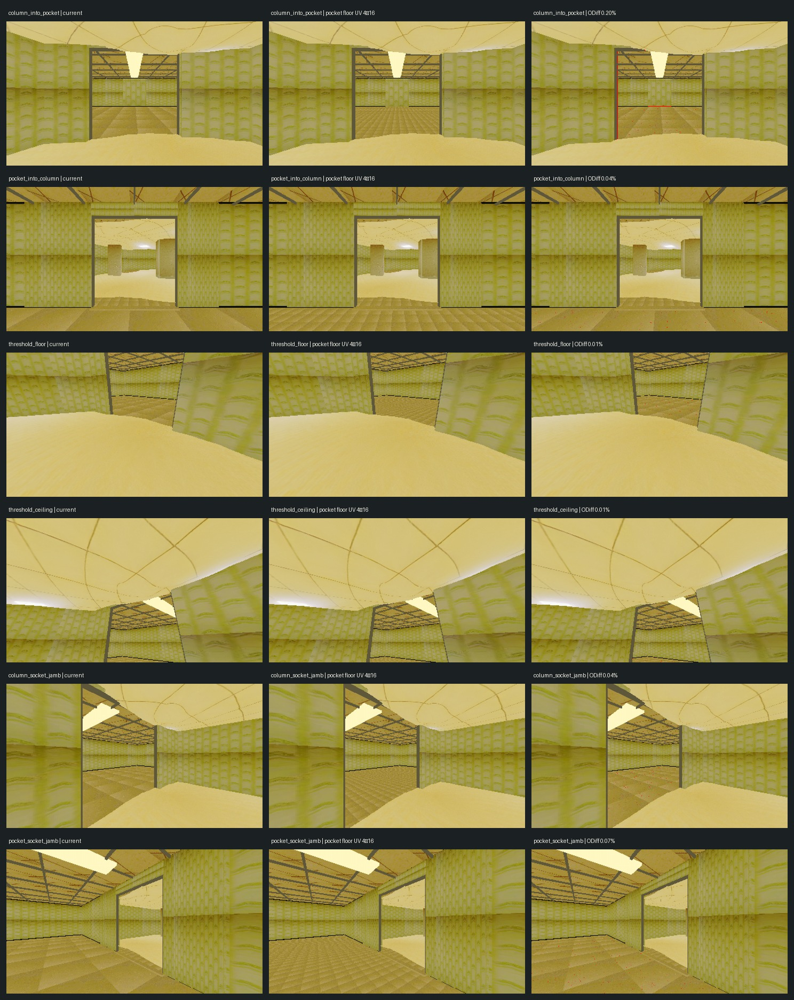
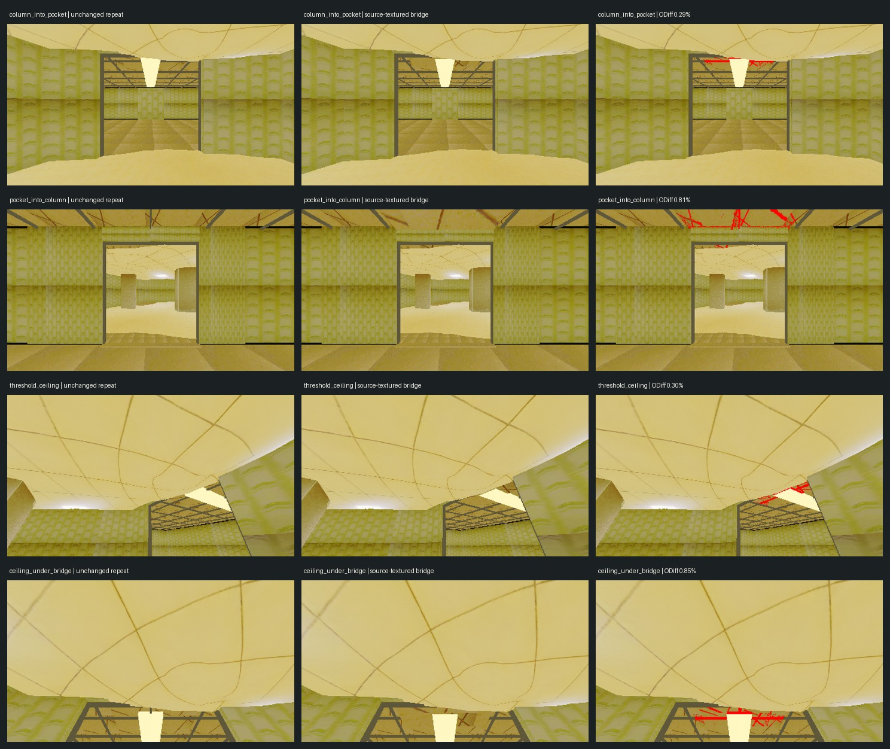

Six views of the operator-accepted column-to-pocket connection, using the affine-off project default. The operator kept the current 4× pocket floor and rejected the source-textured doorway ceiling bridge, which remains disabled. ODiff reports pixel changes, not preference.
Report · Commands · Operator decision · Floor candidate metrics · Ceiling candidate metrics · Ceiling candidate manifest · Baseline poses · Source hashes

| View | Approach module | Surfaces |
|---|---|---|
| column_into_pocket | R000 | door, walls, floor, ceiling |
| pocket_into_column | R001 | door, walls, floor, ceiling |
| threshold_floor | R000 | floor, threshold, jambs |
| threshold_ceiling | R000 | ceiling, lintel, walls |
| column_socket_jamb | R000 | wall, jamb, column-room floor |
| pocket_socket_jamb | R001 | wall, jamb, pocket floor |
Repeat-noise ceiling: 0.0000%. Candidate changes above this are measurable but are not scored for quality.

| View | Repeat noise | Candidate changed pixels | Above noise |
|---|---|---|---|
| column_into_pocket | 0.0000% | 0.2000% | True |
| pocket_into_column | 0.0000% | 0.0400% | True |
| threshold_floor | 0.0000% | 0.0100% | True |
| threshold_ceiling | 0.0000% | 0.0100% | True |
| column_socket_jamb | 0.0000% | 0.0400% | True |
| pocket_socket_jamb | 0.0000% | 0.0700% | True |
The operator chose to keep the bridge off after review. These archived captures show the runtime-only 2.6 × 2.0 m ceiling plane across both sides of the doorway, using the existing source-video texture at UV scale 1.3 × 1.18. It had no collider and changed no saved room or source asset. Repeat-noise ceiling: 0.1700%. ODiff differences measure changed pixels, not visual quality.

| View | Repeat noise | Candidate changed pixels | Above noise |
|---|---|---|---|
| column_into_pocket | 0.1700% | 0.2900% | True |
| pocket_into_column | 0.0000% | 0.8100% | True |
| threshold_ceiling | 0.0000% | 0.3000% | True |
| ceiling_under_bridge | 0.0000% | 0.8500% | True |
Wall source audit: both room families use wallpaper_source_video.png, nearest filtering, and UV scale 4×4 through the same PSX preset. This points to surface geometry and visible Hunyuan coverage as the remaining causes; a global wall-scale change is not supported by the source audit.